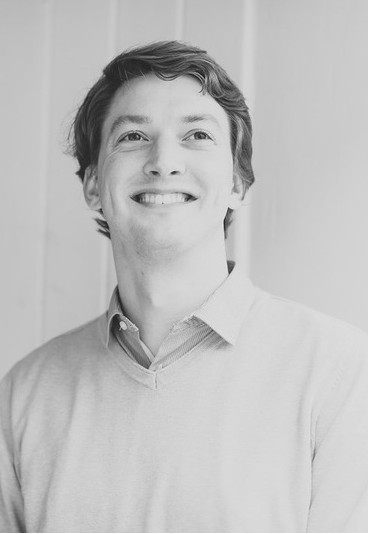

<p>

I am a Senior Research Engineer at BBC Research and Development and a doctoral
researcher at the University of Surrey’s Centre for Vision, Speech and Signal
Processing. My current research is on developing and testing novel interfaces
for navigating and editing media. My other research interests include spatial
audio, music information retrieval, audio codec evaluation and artificial
bandwidth extension of speech. I have also previously worked on video quality
analysis and systems architecture. You can read more about my research here, or
in my blog.</p>
